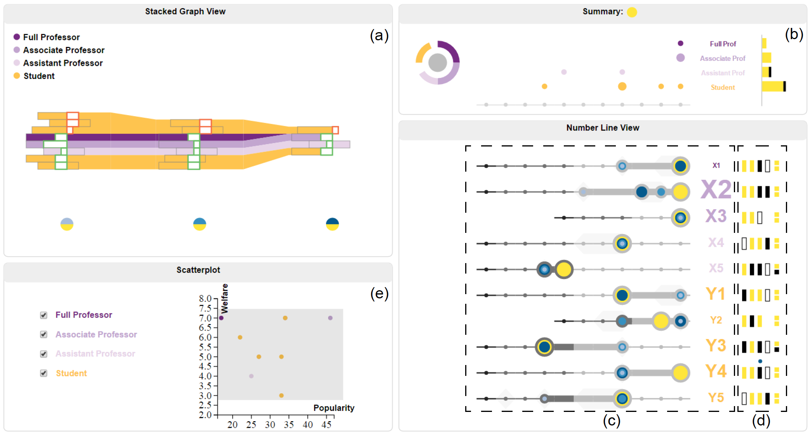

Po-Ming Law (Terrance)
PhD Student
School of Interactive Computing
Georgia Institute of Technology
85 5th St., NW
Technology Square Research Building
Atlanta, GA 30332-0760
School of Interactive Computing
Georgia Institute of Technology
85 5th St., NW
Technology Square Research Building
Atlanta, GA 30332-0760
Email: pmlaw(at)gatech.edu
Phone: (678)469-5934
Office: TSRB 331
I am a Computer Science Ph.D. student at Georgia Tech. My research interests are in visual analytics, information visualization and human computer interaction.
I received a degree in Computer Science and a degree in General Business Management from the Hong Kong University of Science and Technology. Before joining Georgia Tech, I worked as an undergraduate researcher in HKUST VisLab.
Curriculum Vitae
I received a degree in Computer Science and a degree in General Business Management from the Hong Kong University of Science and Technology. Before joining Georgia Tech, I worked as an undergraduate researcher in HKUST VisLab.
Curriculum Vitae
Publications

VisMatchmaker: Cooperation of the User and the Computer
in Centralized Matching Adjustment
IEEE Transactions on Visualization and Computer Graphics (Proc. VAST'16), 2016
Download: pdf
pdf
 ppt
ppt
 video
video
in Centralized Matching Adjustment
IEEE Transactions on Visualization and Computer Graphics (Proc. VAST'16), 2016
Download:
Other Interesting Projects
Copyright © 2016 Terrance Law